Kaj je dobro
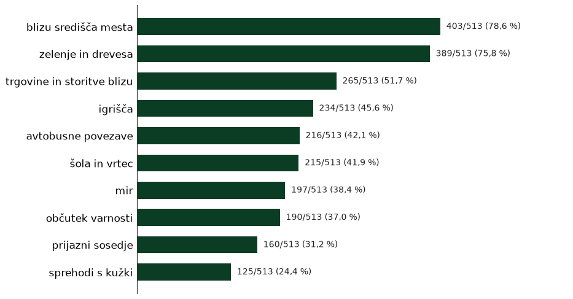
Komentarji
Kje je največ težav
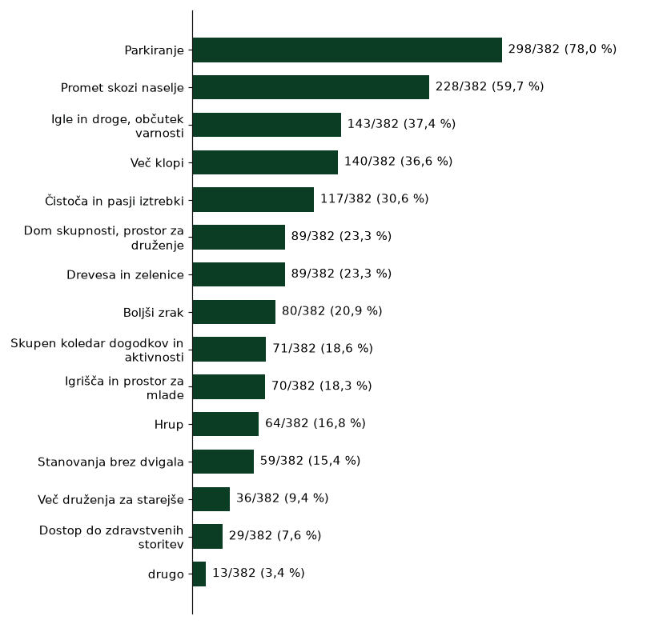
Parkiranje
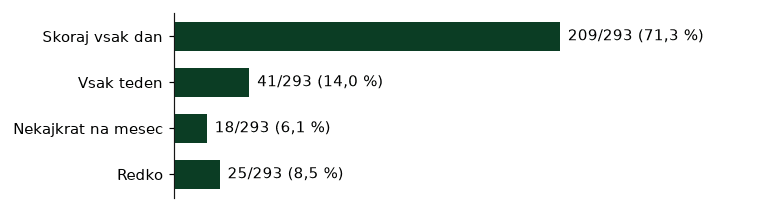


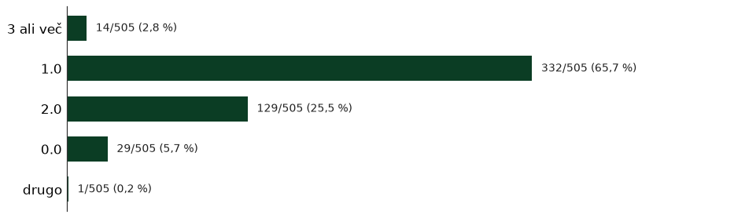

Komentarji
»in da se ustavi ljudi k parkerajo po zelenicah in na otroskih igralih«
»Verjetno je največja težava parkiranje.«
»parkirišč primanjkuje (bi se dalo kakšno zelenico, ki je nihče ne uporablja, nameniti parkirišču).«
»Treba bi bilo razmišljati o garažnih hišah, mogoče celo podzemnih, da se ceste lahko odprejo zopet k druženju sosedov ter različnim aktivnostim.«
»Pomanjkanje parkirnih mest,«
»Parkiranje ob večerih je... naporno.«
»Brezplačni parking je nujno potreben !«
»Parkiranje je zvečer oteženo, parkiranje po zelenicah in pločnikih je nujnost in prebivalci pri tem nimajo druge izbire.«
»Parking«
»parkingov«
»Neurejeno parkiranje za prebivalce naselja.«
»Najbolj me moti prezasedenost parkingov. Parkirajo se vsi ki delajo v bližini. Največ iz davčne.«
»Absolutno neurejeno parkiranje.«
»parkirišče.«
»Parkirišča so problem, ampak me ne moti — saj druge izbire/rešitve ni.«
»Problemi s parkiranjem.«
»Trenutno je največji problem parkiranje ljudje puščajo avtomobile po zelenicah/pločnikih oz. kjer koli lahko. Mogoče bi z uvedbo enosmernih ulic pridobili zadosti dodatnih parkirnih mest na zelene površine in pločniki nebi bili več na udaru.«
»in bolj urejen parking.«
»premalo parkirisc«
»Ne moreš hodit po pločniku na [ena od ulic v naselju] zaradi parkiranih vozil. Parkirana vozila na zelenicah.«
»Če šola oddaja telovadnico za druge dejavnosti, naj zagotovi tudi parkirne prostore.«
»Parkiranje ,«
»Lahko bi edino nekako zaprosili za kaksno ogromno garazo da se naredi v nasem naselju«
»raje bi zakupul parkirno mesto oziroma garazo«
»Predvsem pogrešam več parkirišč za kolesa, ob blokih, ob igriščih.«
»Zaparkirani pločniki. Parkiranje na zelenicah. Premalo parkirišč.«
»PARKIRISCA!!!!!«
»Premalo je parkirišč,«
»parkiranje na zelenicah«
»Vsekakor stanje mirujočega prometa. Žalostno je, da se vse to razkošje zelenih urbanih prostorov utaplja v avtomobilski pločevini, ne le stanujočih v naselju, pač pa obiskovalcev mesta, še posebno tistih, ki menijo, da si njihovi kovinski ljubljenčki zaslužijo svoje mesto na pločniku pred lokalom, ki ima sicer svoja parkirišča (a se potlej ne bi videlo v čem so se pripeljali).«
»lažje parkiranje«
»Ni dovolj parkirnih mest, ko prideš domov ni važno ali tekom dneva ali zvečer po 10uri ni kje parkirati vozila, ker se dogaja, da parkirajo in gredo naprej v službe peš ali z skiroji. Potrebujemo več parkirnih mest,«
»Avtomobili so parkiranih po plocnikih«
»zgraditi parkirno hišo, da bi se rešili težav s parkiranjem,«
»MOTI ME: PREVEČ ODDANIH STANOVANJ V NAJEM PARKING GA NI - Če parkiraš na pločniku konstantno plačujemo kazni redarstvu«
»Manjkajo večje in manjše izboljšave življenja: večje: -parkiranje, parkiranje in še enkrat parkiranje. odvratno je da že tako ni mest, potem pa mol še pošilja redarje da oglobijo vse povprek, bravo mol manjše:«
»ureditev parkirišč z zapornicami povsod«
»parkiranje, omejitev avtomobilov do največ dva avtomobila na stanovanje«
»Ogromni problemi so s parkiranjem, če se vrneš domov po 16. uri.«
»Parkirišča pred nekatereimi zgradbami so seveda tudi problem - vsi parkirajo vsepovsod. AMpak to predvidevam da je na ravni stanovalcev, da se zmenimo za rešitve.«
»pomankanje parkirnih mest«
»Urediti bi bilo potrebno parkiranje v sklopu naselje«
»in parkirisc za kolesa.«
»Neurejena parkirisca za kolesa.«
»Parkirna mesta - urejeno dvorišče (tla oz. beton) z lastniškimi parkirnimi mesti vezanimi na stanovanja.«
»Parkirišča,«
»Nujno bi bilo potrebno prepovedati parkiranje na dovozni cesti med [ena od ulic v naselju] in garazami/stolpnicami ob [ena od ulic v naselju]. Tam parkirani avtomobili otezujejo dostop do garaz.«
»Ljudi obvestiti kje si lahko najamejo parkirisce, v katerih garaznih hisah ali zunaj in se dogovoriti, da imajo stanovalci [ena od ulic v naselju] tam popust.«
»Pomanjkanje parkingov za prebivalce«
»4. Parkiranje je večni problem«
»Največjo težavo v naselje vidim v neurejenem parkiranju, avtomobili so postavljeni na zelenice, posledično so te tudi trajno uničene in ob dežju se zato pojavi veliko število blatnih luž.«
»ureditev parkirisc«
»Predvsem parkirna politika ni urejena, morali bi urediti enosmerni promet parkira aje ob cestah ne pa na zelenica!«
»Parkirnje na pločnikih in zelenica ni urejeno, posledično so zapakirane poti za pešce«
»Prevec avtov povsod, nepravilno parkiranje,«
»Parkirna mesta in novo plačevanje parkirnih mest cez vikend«
»urejanje parkirišča«
»Parkirišča. Kljub zadostnim stevilom parkirisc in vsemi rampami, se vedno prihaja do slabe volje, nekateri imajo po bec avtomobilov na stanovanje, tudi ko pridejo gosti na obisk, zelo tezko parkirajo v neposredni blizini.«
»Urediti podlago za parkiranje ali ukinitev parkiranja pod drevesi na [ena od ulic v naselju]. Ureditev parka z lučjo in omejitev parkiranja ([ena od ulic v naselju] in [ena od ulic v naselju])«
»- prevec avtov ki so nelravilno parkirani..primer [ena od ulic v naselju] kjer otroci nimajo plocnika, hodijo po cesti«
»parkiranje je katastrofa.«
»Problem je parkiranje, ce bi naselje zaprli bi bilo lahko bilj zeleno, nova igrala za otroke… boljse sprehajalne poti in poti s kolesom, rolerji«
»Največji problem je parkiranje«
»V tripleks garažah jih je veliko žal praznih.«
»Imam garažo, pa je vseeno problem s parkiranjem za kratek čas. Parkirani avti ovirajo dostop.«
»In pa seveda...parkirni prostor«
»Moti me, ker sedanja oblast želi lastnikom stanovanj dodatno zaračunati parkirišče, čeprav že plačujemo tudi stavbno zemljišče«
»Urejeno parkiranje 1 avtomobil na stanovanjsko enoto«
»Naselje, kjer je mnogo najemnikov. Pisledično preveč avtomobilov.«
»Premalo parkirnih mest«
»Parkirna mesta«
»Pogresam parkirisca nastop [ena od ulic v naselju] spooh ne mors parkirat ker ljudje iz drugih blokov parkirajo pred tvojim vhodom to se mora nujno izboljsati npr ce prids domov ob 10 se ne mors sploh parkirat razn ce parkiras na plocnik in nasledn dan dobis kazn da te glava boli.«
»Parkirisca... zvecer najdet mesto je nemogoce«
»- parkiranje na zelenih površinah«
»parkirni nikjer ne morm faking parkirat«
»parking TEMA💀«
»PARKING GROZA💀! Pogresam parking«
»V naselju ni možnosti parkiranja za stanovalce.«
»Pogresam urejena parkirisca«
»Mogoce kaksna garazna hisa na tistem delu kjer je bila prej posta.«
»Glavni problem je parkiranje, saj na račun avtomobilov izgubljamo prostor, ki je namenjen nam, prebivalcem.«
»Osebno bi uredil parkiranje na obrobjih naselja, dostop do blokov pa bi bil samo za natovsarjanje/razovarjanje.«
»Nobenih parkirnih mest!«
»Ni parkirne hiše kjer bi lahko stanovalci parkirali svoja vozila in spostili ulice peščem....«
»Manjka nam veliko parkirišč«
»zgradili garazne hise.«
»Najbolj me v bistvu motijo parkirišča. Menim, da bi bilo veliko bolje, če bi se uredile zapornice ali pa nek sistem s ključi, tako da bi imeli dostop do parkirišča samo stanovalci posameznega bloka. Pri nas je namreč parkirišče precej veliko, vendar je težava v tem, da na njem parkirajo tudi ljudje iz bolj oddaljenih blokov. Zaradi tega nam pogosto zasedejo parkirna mesta in se tako pogosto zgodi, da zvečer, ko pridemo domov, za nas ni več prostega prostora za parkiranje. Mislim, da bi bilo zato smiselno uvesti nekakšen sistem nadzora dostopa, ki bi zagotovil, da bi imeli stanovalci bloka, pred katerim je parkirišče, prednost.«
»Sem v najemu, mislim, da bi moral biti to strošek lastnika.«
»Parkiranje na pločnikih«
»Čeprav se ne srečujemo s problemi parkiranja pa nas vse drugo zadeva. Tudi problematika parkiranja, zlasti v smislu uničevanja zelenic, parkiranje po pločnikih in občasno parkiranje ostalih na naših zasebnih zemljiščih ob hišah.«
»Ureditev parkirnih mest za stanovalce.«
»Premalo parkirnih prostorov,«
»Kaznovati tiste ki parkirajo na pločnikih ali na zelenicah,več prisotnosti redarskih služb v naselje.«
»Parkirnu prostor,«
»in da se uredijo parkirišča, ker je vsako leto hujše«
»Moti me, ker nekateri parkirajo osebna vozila na travi, v naselju je velik problem parkiranje osebnih vozil.«
»Več parkirišč.«
»ureditev parkiranja predvsem zunanjih uporabnikov šole in vrtca (jasen režim, ki se kontrolira, staršem so v okolici na voljo parkirišča, v naselju parkiranje prepovedano),«
»trenutno nisem voznik, imam pa obiske s temi težavami«
Promet in poti
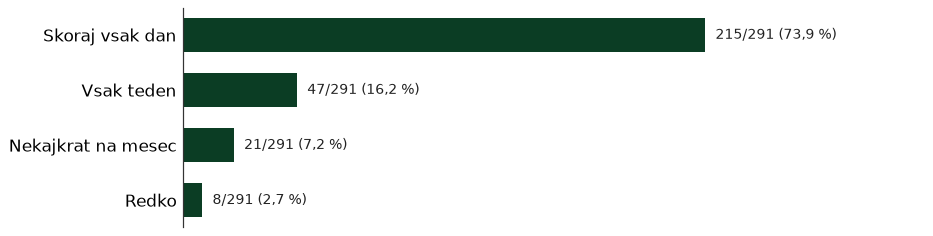


Komentarji
»Na [ena od ulic v naselju] bi dodal še en ležeči policaj na drugem prehodu (pri vhodu na parkirišče za [lokalni prostor]). V enem letu bi me že vsaj 3x povozili, ker vsi divjajo. Videl sem tudi nesrečo, ko je nekdo zbil otroški voziček. Na srečo je takrat otrok hodil zraven mame in ni bil v njem.«
»Po Savcu peš, skiro do službe. Avto za večje nakupe v trgovini.«
»Kolesarske poti, cestna ureditev«
»Promet zmanjšati.«
»Ni pločnikov,«
»Popravilo oz. na novo polaganje asfalta na [ena od ulic v naselju]. Urejena kolesarska steza iz naselje do centra LJ. Povečana kontrola mestnega redarstva oz. policije na križišču [ena od ulic v naselju] in [ena od ulic v naselju], ker ogromno avtomobilov "spregleda" rdečo luč na semaforju in zapelje na prehod za pešce, ko imamo pešci in kolesarji zeleno luč. Da o prepovedanem zavijanju na levo ne govorimo - ovire na cesti ne pomagajo.«
»ureditev prometa.«
»Novi dostopi na [ena od ulic v naselju] (grozna ureditev križišča s [ena od ulic v naselju], semafor je ves čas aktiven (ni utripajoč ponoči). Nezmožnost zavijanja v levo na [ena od ulic v naselju] zaradi dvojne polne črte.«
»Več ležečih policajev v okolici šole in vrtca, saj omejitev 30 skozi naselje ne zaleže.«
»Nova prometna ureditev krožnega [ena od ulic v naselju] je obupna. Predvsem zato, ker ni možno zavijanje iz [ena od ulic v naselju] na levo. Zato je treba iti po [ena od ulic v naselju], ki je ozka, voziti po pločnikih, ali iz [ena od ulic v naselju] mimo [lokalni prostor] bara, katastrofa res.«
»Ozkost cest,«
»Varnost za pešce in kolesarje,«
»Dotrajan in uničen asfalt na ulicah naselja«
»Omejil promet na lokalnega (samo za prebivalce).«
»električni skiro«
»Ni plocnika«
»Vozniki, ki hodijo obračat iz [ena od ulic v naselju], da se izognejo gneči na [ena od ulic v naselju] rondoju.«
»Na [ena od ulic v naselju] bi uvedel cono 30 in postavil radarje v vsako smer.«
»Slabo vzdrzevane ceste,«
»Promet, od ureditve krozisca pri [ena od ulic v naselju] je slabse, ker so speljali promet po vmesni cesti se zastopa celo krozisce. Ko bo zraslo se 1000 novih stanovanj bo pa tukaj resen problem.«
»boljsi prometni rezim,«
»Ze veckrat omenjene predloge v zvezi z novo prometno ureditvijo [ena od ulic v naselju], predvsem: - omogocanje zavijanja levo v naselje iz strani [drug del mesta] proti centru - razsirjenje poti za pesce in vrnitev v prejsnje stanje (ob cesti kolesarska, ob zelenici steza za pesce), z moznostjo kolesarjenja v obe strani (na strani naselja) - izboljsanje prehodov za pesce in kolesarje krozisce [ena od ulic v naselju]«
»Po prenovi [ena od ulic v naselju] je onemogočeno zavijanje v večino dovozov do blokov. Promet je preusmerjen na ozke ulice med naseljem, avtomobili se umikajo na pločnike.«
»[ena od ulic v naselju] bi morala biti samo za lokalni promet, ne pa tranzit iz [drug del mesta] obvoznice v Center. Novo krožišče na [ena od ulic v naselju] je promet na [ena od ulic v naselju] precej povečalo,pretočnost je slabša.«
»enosmerni promet«
»[ena od ulic v naselju] tukaj cesta res grozno samo gas ampak mora bit zraven Radar 30-40km.«
»Zahtevam Radar [ena od ulic v naselju].«
»vozni redi avtobusov. Moti me, da je okrog [ena od ulic v naselju] povečano število avtomobilov, odkar so preuredili potek prometa na krožišču pri [ena od ulic v naselju]. Ker grejo sedaj avti lahko le po notranjem pasu, če ne gredo v prvem izvozu ven, se pojavi dolga kolona, zaradi česar gredo potem vsi na prvi izvoz in skozi naselje.«
»[ena od ulic v naselju], kllesarska steza ob parkiriscu, ce gres v rikverc ven me vidis kllesarjev. Kolesaraka steza mora biti na drugi strani, kot je bilo vcasih.«
»Prevec prometa«
»Čisto napačno na novo urejena [ena od ulic v naselju] , skupaj s krožiščem Neurejene dovozne poti do blokov (polno lukenj)«
»Moti me divjanje z avti, bi vec lezecih in spremenila bi [ena od ulic v naselju] v enosmerno.«
»slaba je signalizacija,«
»Boljša infrastruktura za kolesarjenje (stari pločniki ki so polni korenin so problem tudi za vozičke, invalide, rolerje itd.) To je specifično za moj blok, ampak v pritličju nimamo kolesarnice, ki bi bila zelo koristna.«
»in vsekakor: prometna ureditev, sploh [ena od ulic v naselju] in uvozi v naselje ter ulice okrog sole.«
»problem vidim v ozkih cestah (mogoče bi bile lahko enosmerne),«
»manjka ležeči policaj na [ena od ulic v naselju] (pri [lokalni prostor])«
»Kar je prenovljena [ena od ulic v naselju], se je življenje spremenilo na slabše.Pred vhodom [ena od ulic v naselju],je postalo obračališce za avtomobile,za vse ki iz [lokalni prostor] prihajajo in gredo nazaj proti rondoju.Pri garažah moraš biti zelo pazljiv na kolesarje,ko greš v garažo in ko greš iz nje. Noben kolesar ne čaka tebe,imajo prednost .«
»Premalo urejenih poti za kolesa«
»Še najbolj me skrbi hitra vožnja skozi naselje. Z družino živimo na [ena od ulic v naselju], kjer vhod v blok gleda neposredno na cesto - takoj, ko stopiš ven, stopiš na cesto. Tam bi bilo po mojem mnenju treba strogo omejiti hitrost vožnje avtomobilov (na recimo 10 na uro?)«
»tist del [ena od ulic v naselju], ki so ga obnovili (pločnik + kolesarska), tam na delu kjer je zdaj možnost, da kolo pelje v obe smeri, poleg tega pa tudi ljudje hodijo, tam je zdaj kar zmeda.«
»vec avtobusnih povezav,«
»V naselju ni urejenih plocnikov ali kolesarskih poti, zato je pot do vrtca in sole nevarna.«
»in kolesarske poti ob [ena od ulic v naselju], saj so že pravi skate park.«
»radar hitrosti na [ena od ulic v naselju] (med [ena od ulic v naselju] in [ena od ulic v naselju]).«
»busi preredki«
»Vec prehodov za pesce, recimo v okolici sole nor pri [lokalni prostor] in povsod kjer otroci in drugi preckajo ulico. [ena od ulic v naselju] označiti za voznjo najvec 30km/h po cesti na veliko. V celem naselju oznaciti ceste 30km na veliko napisati na cesto. Znaki so premalo.«
»Zastarela in dotrajana infrastruktura«
»Zavijanje levo na [ena od ulic v naselju]; guzva na [ena od ulic v naselju] c.; guzva na [ena od ulic v naselju] proti [lokalni prostor]; dvosmerna kolesarska steza in premalo prostora za pešce - prometni experiment Župana«
»Skiro«
»Prometno ureditev, dejansko se mi zdi ideja o enosmernih ulicah zanimiva.«
»1. Neverjetno je, da noben avtobus ne pelje po [ena od ulic v naselju], skozi [lokalni prostor] podhod in v center.«
»6. Novo ureditev [ena od ulic v naselju] pri Savcu (peš pot in kolesarske) ne bomo komentirali (vse narobe).«
»Izpostavil bi tudi nekatera nepregledna križišča, saj je velikokrat hitrost skozi naselje prehitra in lahko zelo nevarna za otroke, starejše ljudi in živali.«
»Zavijanje iz [ena od ulic v naselju] v naselje ali obratno«
»Ni normalnih peš poti po soseski. Res se mi zdi problematično, da moramo hoditi po cesti in da ni naselje označeno kot peš cona«
»preureditev kolesarske steze na [ena od ulic v naselju] iz križišča [ena od ulic v naselju] do [ena od ulic v naselju] (pešci imamo samo en pas, kolesarji oba - kolesarska steza je tudi na drugi strani [ena od ulic v naselju], zato bi lahko bila na tej strani samo enosmerna), prekratka zelena luč na semaforju na križišču [ena od ulic v naselju]-[ena od ulic v naselju] v smeri šole«
»Asfaltiranje ulic,«
»Promet po [ena od ulic v naselju],«
»Na [ena od ulic v naselju] obvezno lezeci policaj na dveh koncih (pri [lokalni prostor] manjka se en).«
»Enosmerne ulice. Ogledala na nepreglednih križiščih ([ena od ulic v naselju] in [ena od ulic v naselju]).«
»Morda bi morali razmisliti o popravilu cest počasi ker je asfalt močno načet in sem za postavitev tabel za umirjeni promet, še vedno se najde bedak in pri nori, medtem ko ti skoraj stopiš na cesto iz bloka.«
»Pločnike bi morali urediti,«
»Omejiti bi morali promet skozi savca.«
»Najslabse je, da cez naselje potekajo ceste, onemogocajo normalen sprehod tako z otroci kot s kuzkom.«
»Več površin za sprehajanje, ki niso med avti in po/ob parkiriščih«
»Nočne LPP linije,«
»LPP«
»in ozke ulice skozi naselje.«
»V naselju bi bilo treba narediti enosmerne ulice. Velik problem je "nova" [ena od ulic v naselju] in krožišče pri [ena od ulic v naselju].«
»Prevoznost ulic za stanovalce ter obnova le teh«
»Nova prometna ureditev«
»Motor«
»1) Nisem zadovoljna z novo ureditvijo [ena od ulic v naselju]. Za uvoz k našemu bloku iz smeri [ena od ulic v naselju] rondoja moramo peljati vse do križišča s [ena od ulic v naselju] in tam obrniti v naselju ter se peljati nazaj. Ne zdi se mi prav, da na ta način še povečujemo promet v tem delu naselja, morda tudi potencialno pride do nesreče s kakšnim pešcem in kolesarjem. Včasih se z avtom tudi peljemo skozi naselje, da se pripeljemo s prave strani na [ena od ulic v naselju]. 2) Robnik, ki ločuje kolesarsko stezo od pločnika v novi ureditvi [ena od ulic v naselju] je za kolesarje potencialno nevaren. Vem za 3 padce s poškodbami (zlom komolca, ključnice) in pri enem sem bila tudi priča. Pri zadnjih garažah iz smeri centra proti rondoju pred zadnjim uvozom.«
»Lažjo dostopnost z avtom ven iz Savca proti centru. Npr. iz [ena od ulic v naselju] na [ena od ulic v naselju], bi se moralo omogočiti s semaforjem, da bi lahko zavili tudi levo proti centru ([ena od ulic v naselju]) in ne samo desno proti ([ena od ulic v naselju]). Ker če gremo z avtom proti centru, moramo narediti cel krog.«
»Menim, da je ena najbolj perečih točk stik [ena od ulic v naselju] in [ena od ulic v naselju], kjer smo pešci vedno ogroženi, ko prečkamo [ena od ulic v naselju], ker se številni vozniki ne zmenijo za rdečo luč na koncu [ena od ulic v naselju]. Tam potrebujemo normalno križišče, semaforje (in zavijanje levo z LP).«
»[ena od ulic v naselju] je zelo obremenjena in vozniki prehitro vozijo. Prehodi za pešce so slabo označeni. Občina je po večkratnih opozarjanjih namestila svetleče prometne znake za prehod za pešce, vendar se še vedno prepogosto zgodi, da ga vozniki spregledajo. Dodatna osvetlitev prehodov za pešce s talnimi lučkami in omejitev hitrosti na 30 ali max 40 km/h na [ena od ulic v naselju] bi veliko pripomoglo k varnosti in zmanjšanju hrupa in onesnaženosti.«
»motor ali e-skiro«
»enosmerne ulice,«
»umiritev prometa,«
»Pločniki so ponekod zelo zgrbani zaradi drevesnih korenin.«
»Izboljsali bi plocnike (kaksna cesta ga sploh nima) in ceste, tudi prometno ureditev,«
»Največ problemov je povezanih s prometom. V samem naselju so preozke ceste.«
»Ceste okrog naselja so obupne glede pregostega pfometa,«
»Ulice in pločniki so komunalno neurejeni.«
»Pločnik ob [ena od ulic v naselju] zaradi reklamnih panojev onemogoča pešcem varno hojo saj morajo hoditi mimo njih po kolesarski stezi.«
»Krožišče pri [ena od ulic v naselju] je natedilo totalen cestni kolaps....«
»hitra voznja po cestah, kjer so tudi pesci, luknjaste ceste«
»- z avtomobili je kaos - znotraj soseske je za kolesarje pozabljeno«
»Prepoved tranzicijskega prometa, veliko avtov gre skozi [ena od ulic v naselju] od male pumpe do [ena od ulic v naselju] in norijo po cestah cez katere hodijo otroci.«
»Prav tako se po cesti [ena od ulic v naselju] vozijo ljudje prehitro. Dva lezeca ne pomagata. V blizini je sola in vrtec in nekateri res dvijajo. Tu bi morala biti cona 30 pa tudi ce postavijo radar. Nekateri ljudje se obnasajo kot da so na obvoznici in vozijo zelo hitro.«
»Velika večina ulic bi morala biti enosmernih , na križišču [ena od ulic v naselju] in [ena od ulic v naselju] bi bilo fajn imeti ogledalo (iz [ena od ulic v naselju] zavijaš na slepo levo proti [lokalni prostor] baru ker so avti parkirani na pločniku)«
»[ena od ulic v naselju]. dostop do parkirišča je samo iz ene smeri, ker sta vmes dve polni črti. Tako, da je potrebno narediti velik krog, da se pravilno zapelje na parkirišče. Enako velja za lekarno. Iz cenrta mesta po [ena od ulic v naselju] moraš do krožnega in obrnit da prideš do lekarne. Prav tako nas motijo količki, ko prideš ob garažah in greš lahko samo na izhod, z obvezno smerjo in ne na izhod, kjer je bila včasih trafika.«
»Prometna ureditev je zmedena za zavijanjeniz [ena od ulic v naselju] v naselje«
»Prav tako mislim, da bi morali fizično omejiti tranzit čez naselje, npr. s slepimi ulicami, kar sicer oteži dostop do domov nam prebivalcem, vendar mislim da sta varnost in mir bolj pomembna.«
»avtomobili, ne samo prečkanje cest in parkirišč, ampak pogosto tudi kar vožnja po samem pločniku ([ena od ulic v naselju])«
»avto in peš«
»Zmanjsanje prometa,«
»Komunala ne skrbi za cestišča, ki so dotrajana in neurejena. Vsa cestišča so preozka za srečanje dveh vozil.«
»Pogrešamo da ne moreš pridt lepo domov kot smo hodili nekoč. Govori se o dvojnih črtah.«
»Zmanjsali bi dostop dnevnim migrantom.. razbremenitev glavnih cest, z gradnjo cesti ob [ena od ulic v naselju] in tako zmanjsali hrup za prebivalce«
»Vse od zgoraj naštetega«
»Preveč prometa, stalna prometna zmeda na križišču [ena od ulic v naselju] in [ena od ulic v naselju],«
»neupoštevanje omejitev hitrosti skozi naselje (električni skiroji),«
»zelo slaba pretočnost prenovljenega krožišča pri [ena od ulic v naselju],«
»Poškodovan manjše ulice.l«
»Skuter«
»urejenost [ena od ulic v naselju] za kolesarje in pesce, prometna ureditev [ena od ulic v naselju] ( izvozi oz.dovozi)«
»in prehod na [ena od ulic v naselju] pri kanti z humano za varnejse preckanje ceste«
»Moti me, da se [ena od ulic v naselju] ob dezevnih dnevih zabase in nemoremo nikamor z avtom ker nemoremo s parkirisca od doma.«
»Fantje na električnih skirojih preveč divje norijo. Nevarno!«
»Izboljšali bi promet iz naselja, razširiti ceste kar je seveda težko ali pa naredili enosmerne ulice, da ne pride do srečanj avtomobilov, kjer se nimaš nikamor umakniti. [ena od ulic v naselju] dvosmerna, ostale urediti enosmerno.«
»Po naselju bi se morale urediti kolesarske steze, zaradi neupoštevanja voznik bi morali urediti na vsaki cesti v naselju ležeče policaje, da bi vozniki omejili hitrost vožnje.«
»bolj smiselna ureditev [ena od ulic v naselju] ( do stolpnic lahko zaviješ samo desno, torej moraš priti iz mestne strani, iz naselje pa po obstoječi prometni ureditvi niso dostopne), peš poti ob [ena od ulic v naselju] sta na obeh straneh zelo ozki in ne omogočata srečanje 3 ljudi, kolesarke poti pa so zelo široke, na eni strani sta dve, na drugi pa ena razmeroma široke in kolesarji zlasti pa tisti s skiroji vozijo zelo hitro in se na pešce ne ozirajo. Semaforji za pešce imajo zelo dolg interval in so namenjeni zgolj motornemu prometu. Na [ena od ulic v naselju] je sedaj tudi ogromno robnikov in otokov, ki ne služijo ničemur. Pluženje ob morebitnem snegu je zato problematično(lanska zima je to pokazala. Menim, da je ta nova prometna ureditev [ena od ulic v naselju] zgrešena in povzroča nesmeselne vožnje na okoli.«
»umiritev prometa na vseh notranjih ulicah, sploh tistih, ki jih prečkajo šolarji,«
»Prometne povezave (enosmerne rešitve grozno podaljšujejo čas poti),«
»peš, avtobus, taxi, kolo«
Storitve

Komentarji
»ni več pošte, banke, izginja ta mikrosistem, ki je delal [ena od ulic v naselju] naseleje poseben«
»Knjigarno, tržnico/trgovinico z domačo zelenjavo in sadjem, pošto, knjižnico, ki je odprta vse dni v tednu«
»Kavarna, slaščičarna«
»Trafika, Urbanomat«
»ni bankomata ob [lokalni prostor] na [ena od ulic v naselju],«
»Bankomat, drogerijo«
»V centru naselje je arhitekturno dobro postavljen manjši kompleks namenjen trgovinicam, lokalu in trenutno [lokalni prostor]. Ampak je premalo izkoriščen saj bi morala tam biti oprte storitve, ki povezujejo ljudi in ki jim dajejo prostor za različne dejavnosti. Namesto bara kamor zahajajo samo moški, bi lahko bil družinam prijazni lokal, mogoče prostor za telovadbo, male trgovine s nujno potrebnimi stvarmi (tehnicna oprema, itd). Ker tega ni, se ljudje zapirajo in dialog med njimi ne steče.«
»Pekarna«
»Večja trgovina.«
»In to da so ukinili pošto in banko in pekarno in mesnico je bistveno poslabšalo kvaliteto življenja v naselju.«
»Opažam, da storitve iz naselja postopoma izginjajo, banka, pošta. Kar otežuje življenje predvsem starejšim prebivalcem.«
»Storitve izginjajo.«
»Ni banke, pošte...«
»storitve, lokali, uporaba prostorov pri [ena od ulic v naselju]«
»Pomanjkanje pošte in banke.«
»V naselju ni več pošte.«
»Manjka samo to kar so nam že vzeli; posto, banko,«
»Več lokalov. Imamo samo [lokalni prostor].«
»Nobene slaščičarne ali kavarne, ki bi ponujala sladoled, slaščice, manjše prigrizke. Čevljarja ni več???«
»Slaščičarna/kavarna«
»Bankomat v [lokalni prostor] na [ena od ulic v naselju]«
»Pogrešam banko, pošto, pekarno,«
»Pekarna, trafika«
»(edino Pošte ne).«
»Brez pošte in pekarne.«
»Pogrešam kakšno kavarno, knjigarno,«
»Osebno nič mogoče banko za starejše prebivalce.«
»Pekarna, Pošta«
»Slaščičarna«
»pošto,«
»Fitnes telovadnica«
»javen wc«
»Trgovine z oblekami in obutvijo«
»pošta,«
»Majhne storitve: ključavničar, čevljar, slaščičarna.«
»Nič«
»Kakšno restravracijo z malicami (kjer se odbi tudi kaj veganskega)«
»Podpora knjižnici, da bi bila lahko dlje odprta.«
»Tehnična trgovina (orodje, kabli, popravila...), knjižnica je na dobri lokaciji ampak ima zelo omejen urnik«
»Izginjanje storitev iz naselja: banke, poste…«
»Manjkajo kavarne«
»Kavarne«
»zanemarjena [lokalni prostor] trgovina«
»izgled trgovin [lokalni prostor]«
»pošto, banko.«
»prodajalec sadja in zelenjave«
»več trave«
»pošta, ostalo je le še prevzemno mesto. najbližja v [ena od ulic v naselju] - banka, sicer je najbližja v [ena od ulic v naselju], samo vseeno«
»ni muzejev, ni prireditev, obsežnejše knjižnice«
»Nič imamo vse,«
»Slabo je, ker so vzeli pošto in bankomat ter banko. vsaj bankomat in pošta bi morala ostati, ogromno starih ljudi sploh ne zmore do pošte in gotovine.«
»bankomat in čistilnica«
»Mesnica in ribarnica, pekarna, trafika.«
»Pošta, bankomata, sadje zelenjava trgovina«
»Bančni avtomat, trafika«
»Poslovalnica poste,«
»Nujno vrnitev poslovalnice poste«
»Pekarna, lokal z vrtom«
»Nimam banke, poste,…«
»Trafika«
»Škoda je tudi, da smo kot soseka izgubili pošto, banko, pekarne, te prostorih pa sedaj propadajo in samevajo, kar zopet kazi izgled soseske in jo dela mrtvo ter takšne predele v večernih urah spremeni v nevarna območja.«
»kak spodobnejsi gostinski lokal«
»Pogrešam na tej strani bankomat, recimo pri [lokalni prostor], pri [lokalni prostor] [ena od ulic v naselju]....«
»Bankomat«
»Manšanje storitev v naselju (pošta/banka)«
»Zaprta pošta,«
»pekarna, sladoled na kepice«
»Ni vec pošte, ni več banke, ni več trafike, ni več pekarne.«
»Trafika, pekarna«
»posta in banka«
»[lokalni prostor] ki dela 24/7«
»Samo Frizer je še ostal!«
»banko smo včasih imeli, zdaj je ni več«
»Pekarna, sadje-zelenjava, mesar, trafika«
»Pogresam posto, vecjo trgovino (samo dva manjsa [lokalni prostor] sta in [lokalni prostor]…)«
»Pogrešam čase, ko smo imeli mesnico, sadje in zelenjavo, pošto, banko, bankomat...«
»čistilnica«
»Pekarna,mesnica,«
»Sem tudi mnenja, da bi vsaka večja javna površina potrebovala javne sanitarije v neposredni bližini stanovanjskega dela naselja (J od [ena od ulic v naselju] c.), saj so že obstajali primeri, ko so določene osebe "opravljale potrebo" kar na blokovski fasadi ali na javnih površinah kot psi.«
»1. Kakšna dobra gostilna/pizzerija/restavracija, ki NE SLUŽI kot lokalna "beznica" za lokalne pijance oz. alkoholike. 2. Javne sanitarije! (strožja politika glede opravljanja potreb na javnih krajih znotraj naselja).«
»Nimamo več pošte, banke.«
»Neživost objekta pri [lokalni prostor] na [ena od ulic v naselju],«
»storitve iz soseske bežijo..po banki, pošti, pekarni je sedaj odšel še čevljar...«
»Pekarna, čevljar«
»zaktivirali bi, banka in pošta, to je katastrofa kar so nam vse vzeli, bankomata tudi ni več, je pri [lokalni prostor] ,«
»sadje zelenjava,«
»Nimamo vec poste in banke, to bi si zelel, da se vrne.«
»Banko«
»Pogrešam Pošto in banko ter čevljarja.«
»Čevljar,«
»Pogrešam odprt [lokalni prostor], za spit kakšno kavo ali popiti kak drink.«
»Vzpostavitev poste.«
»več storitev: pošta, čevljar, ključavničar, ...«
»čevljar, ključavničar«
»Nobeno«
»- vrnitev Pošte«
»[lokalni prostor], mini tržnica«
»Bar a teraso in igriscem«
»ukinitev poštnega nabiralnika na [ena od ulic v naselju],«
»Starejši občani pogrešajo pošto,banko.Včasih je bila v naselje.Zdaj pa morajo hoditi v [ena od ulic v naselju].«
»Kavarna«
»V [lokalni prostor] baru nimajo veganskega mleka, kar je diskriminatotno do nas veganov in do tistih, ki so alergični na kravje mleko.«
»Knjižnica bi lahko delala vsak dan.«
»Servisi za skiroje.Zlatarne kjer popravljajo«
»Boljse in vecje trgovine z zivili«
»Boljša in raznovrstnejša ponudba obeh trgovin,«
»Restavracija z dostojnimi malicami«
»Trgovina - [lokalni prostor] - je precej porazna! Kvaliteta svežih stvari je katastrofalna. Imenujem ga kazenski [lokalni prostor]. Izboljšala bi dostopnost trgovin in storitev, lokalno, peš. Morda bi lahko imeli lokalno tržnico vsake toliko?«
»pekarna, več frizerjev«
»Menim, da imam na razpolago vse za vsakodnevno uporabo.«
Igle in droge, varnost

Komentarji
»veliko je narkomanov,«
»slaba razsvetljenost,«
»in na splošno čuden folk, ki tam živi. Zdaj vem zakaj imajo varnostnika.«
»Vandalizem ponoči«
»Brezdomci in občasno opiti oz. nadrogirani ljudje zaradi katerih se ne počutim varno. Narkomanske igle v grmovju.«
»Varnostnike v trgovini [lokalni prostor]. Prevec pijanih ljudi okoli trgovine in bara zraven.«
»Slabo razsvetljena [ena od ulic v naselju].«
»Vecja varnost,«
»V parkih se včasih zbirajo problematične osebe.«
»Malo me skrbi porast vandalizma, vdorov, vlomov oz. kraj v naselju.«
»z občasnimi motnjami tujih prebivalcev in se mi zdi da je tudi vandalizem vsaj v trikotniku a igrišču pri [ena od ulic v naselju]...lahko pa povem da imam [očitek posameznikom odstranjen]«
»mafijci v [lokalni prostor]«
»žal res, vendar večinoma kjer so klopi malo bolj skrite je okoli njih polno odpadkov tudi takih ki so nevarni (igle...).«
»Varnost«
»vendar zal tudi za drogerase :(«
»Prevec droge (prodajanja, uzivanja in smeti).«
»Narkomani in alkoholiki ki dnevno posedano na igriscu na [ena od ulic v naselju], pred [lokalni prostor]. To ni mesto za tovrstna druzenja ampak za otorke.«
»Prav tako ulična razsvetljava ni povsod delujoča.«
»Prav tako je v zadnjem casu prevec igel. [lokalni prostor] bar sami sumljivi ljudje se tam zadrzujejo….ni prijetno se zvecer sprehodit, nimas obcutka varnosti.«
»Javna razsvetljava ne deluje povsod.«
»narkomanske igle po tleh«
»Vecji nadzor (prevec narkomanov«
»[ena od ulic v naselju] RAZSVETLJAVA. Prenizka ulična svetila,zakrita z drevesjem, brez funkcije, poleti zaradi listja popolna tema. Del ulice od [lokacija odstranjena] proti [ena od ulic v naselju].«
»Nadlegovanje, izgredi in vdiranje narkomanov in brezdomcev v bloke - občutek varnosti in zdravo okolje za otroke«
»Dodatni komentar glede varnosti: na splošno v primerjavi s centrom dobra, vendar se zadnje čase pojavljajo igle«
Klopi

Komentarji
»popravilo uničenih klopc,«
»klopice«
»Pred [lokalni prostor]«
»Več klopci z mizo.«
»Premalo klopi v parkih in na igriščih. Tiste, ki so včasih bile umeščene v prostor (npr. igrišče na [ena od ulic v naselju]), so uničene in niso nadomeščene oz. obnovljene.«
»Pogrešam več klopi z mizami.«
»Ksna klopca dodatna,«
»Pogresam klopce«
»Se kaksne klopce,«
»Veliko klopic je bilo odstranjenih ali pa nimajo sedišč. Želeli bi več klopic pod sencami dreves.«
»Vec klopc,«
»Premalo klopic,včasih jih je bilo več«
»Predvsem okrog [lokalni prostor] pogrešam klopce, sploh poleti v senci.«
»na zelenici, ki leži ob [ena od ulic v naselju] ob zaklonišču pred bivšo pošto in [lokalni prostor]«
»kjer je možno in je senca«
»premalo klopic,«
»oz klopi pri zelenih povrsinah,«
»Pred bloki ni klopic«
»polomljene klopice,«
»3. V športnem parku so postavili klopce tam kjer poleti ni nobene sence, medtem ko je še veliko površine s starejšimi drevesi, kjer klopc ni.«
»Več klopc«
»Ni kje sesti na poti do trgovin [lokalni prostor] na [ena od ulic v naselju].«
»Klopic je vsekakor premalo je pa res da se tudi sproti uničujejo, bi jih morali redno vzdrževati ne samo postavljati.«
»[ime odstranjeno] je rekla, da i bila pri [lokalni prostor], pri [ena od ulic v naselju] hribu kakšna, med [ena od ulic v naselju] in [ena od ulic v naselju]«
»Več skupnih zunanjih prostorov, klopi z mizami.«
»Več klopi za druženje na prostem.«
»Kaksna klopca vec, da bi ze lahko ljudje bolj povezovali , druzili (in seveda kos ob klopci)«
»Lahko bi bilo več klopc po naselju.«
»Klopce«
»več klopi ob zelenicah,«
»Postavitev dodatnih klopc v [ena od ulic v naselju] v senci dreves«
Čistoča
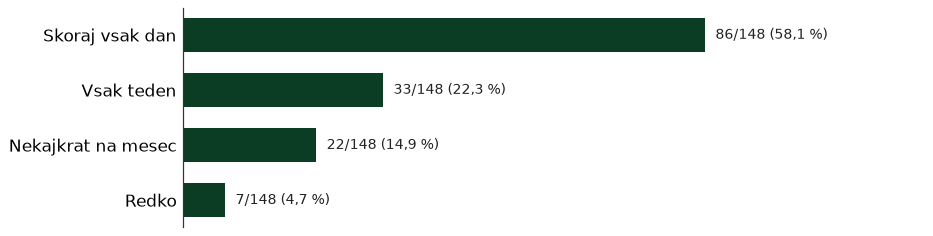

Komentarji
»Mislim, da bi moral za čistočo vsak skrbeti sam. Predvsem vzgoja se začne doma. Nekaj pa tudi občina, da večkrat očisti naselje«
»Da, podpiram nekajkrat na leto«
»Higiena okolja, smeti so povsod. Okoli zabojnikov, na pločnikih itd. Ljudje iz blokov mečejo hrano na trato. Tako se podgane širijo, psi pa poberejo hrano in imajo prebavne težave. Hrana je namreč skrita med listjem in zato na sprehodu s povodcem tudi ne moreš opaziti.«
»Urediti varen pasji park brez možnosti pobega izpod«
»Naselje je dokaj umazano,«
»premalo košev za odpadke,«
»zabojniki za smeti ob cesti, zraven pa individualni kosovni odpad,«
»tudi koša za smeti ne.«
»Ne podpiram, če bi vsak poskrbel za red in čistočo (tudi z več koši za smeti - MOL) ne bi bilo treba čistit drugim.«
»pogostejše čiščenje cestišč vključno s pločniki (jeseni zaradi listja, pozimi snega, poleti in v ostalem času pa preprosto zaradi ohranjanja okolice in narave),«
»Smeti, pasji kakci. Posledično podgane in miške.«
»Okolica ni ravno urejena.«
»Odkar so "socialna" stanovanja na [ena od ulic v naselju] pri [lokalni prostor] so povsod same smeti, prazne piksne piva v parku zraven,«
»in smetnjakov (tudi za pse) je premalo«
»2x letno«
»čeprav veliko ljudi/pasjih lastnikov ne pobira kakcev za svojimi ljubljenčki.«
»Podpiram, ampak je potrebno tudi vključiti v to druge pristojne službe, ki ceste npr ne čistijo nič. To ni na mestu za stanovalce«
»Da ljudje ne bi tako smetili, to me res žalosti, nenehno pobiram na sprehodih smeti, očistim travnik in naslednji dan jovo na novo.«
»Več smetnjakov.«
»Količina smeti na tleh, travi, povsod. Smetnjaki polni do te mere, da ven leti. Ljudje, ki hranijo golobe in potem ti te smeti vlečejo iz smetnjakov in razmetavajo po celotnem naselju. Podgane. Komarji, ki so posledica stoječe vode v plastičnih posodah pod drevesi, ki jih ljudje nastavljajo za živali. Premalo pitnikov za pse.«
»Podpiram enkrat na leto. Sicer pa mora za čistočo skrbeti vsak sam! Ter na koncu občina.«
»zabojnik za tekstil,«
»Meni se zdi kr cisto«
»Na dva do tri mesece«
»Zbiralnike oziroma smetnjake za odpadno jedilno olje«
»4x letno - na vsak letni cas«
»vec smetnjakov na igriscuh,«
»mladi ki sedijo v parkih naj počistijo za seboj in v garažah isto.«
»Žal je učinek čistilne akcije zelo kratkotrajen, rabimo sistemske rešitve. Je eno bolj umazanih naselji kjer sem do sedaj živela.«
»Veckrat kaksne cistilne akcije.«
»Skrb za okolico bi lahko bila na višjem nivoju«
»Treba bi bilo narediti deratizacijo v celem naselju,podgan je ogromno«
»Cistoca je na nuli!«
»pasji iztrebki«
»Želela bi si bolj zavzete stanovalce glede urejenosti okolice blokov. V tem opažam velike razlike. Nekateri pa tega enostavnk ne zmorejo/zmoremo (različni razlogi).«
»Občina npr. ne čisti odpadlega listja s parkirnih prostorov in pločnikov. To se mi ne zdi prav. Ker vedno bodo ljudje, ki se zato ne zmenijo in potem moramo drugi dvojno skrbeti za to.«
»1x na kvartal«
»Tam kje se otroci igrajo, sedijo po tleh, kopajo po peskovniku nikako ne sodijo kužeki. Saj ih jaz tudi imam radi, ampak lastniki ne poberejo istrebke, pol naprimer otrok z autizmom ki spoznaja teksturo to uzame v roke ali še slabše v usta. Table so, sam jih pa spregledajo. Ne kateri otroci se bojijo psov. Treba je dati večje, bolj vidne table.«
»Odlaganje odpadkov [ena od ulic v naselju] - imamo skupne zabojnike z [lokalni prostor], v njih pa je vse kaj drugo kar bi moralo biti. Želim si da bi bili zabojniki pod ključem in da bi ena oseba skrbela za pripravo zabojnikov ob odvozu. Opažam tudi da v zabojnike mečejo odpadke tudi drugi, ki smeti pripeljejo kar z avtomobilom. Opozoriti tudi [lokalni prostor] da v črne zabojnike ne sodi papir (za karton imajo poseben prostor za zbiranje).«
»čistoča,«
»Pogrešamo pasji park. Veliko prebivalcev naselje ima pse, ki se vsak dan na sprehodih srečujejo in socializirajo na zelenih površinah. Vendar iz spoštovanja do ostalih redkokdaj spustimo pse iz povodcev, posledično se ne morejo zaprav igrat in "razlaufat". Pasji park na eni od zelenic bi bil zelo dobrodošla pridobitev. Dovolj bi že bila manjša ograjena zelenica z košem za pasje iztrebke in klopco.«
»Pasji park«
»košev za smeti,«
»podpiram ampak dokler se ne reši kultura stanovalceev in obiskovalcev naselja je vse malo brez veze ker lahko potem čistimo vsak teden«
»več zabojnikov za pasje iztrebke in vrečke za pobiranje iztrebkov«
»2x na mesec«
»Podgane problem,«
»Smeti po naselju, polni in odprti smetnjaki, zapuščeno in zanemarjeno okoli poslovnih stavb in blokov,«
»Enkrat na 3 mesece«
»2 / 3 x letno«
»5. Koši za smeti po [ena od ulic v naselju] med Savcem in [lokalni prostor]. Jih ni. Medtem, ko na [ena od ulic v naselju] pri [ena od ulic v naselju] jih je na pretek.«
»in košev za smeti,«
»slabo/neredno odstranjevanje listja/vej s pločnikov (predvsem po celi [ena od ulic v naselju])«
»Nekajkrat na leto«
»smeti«
»Veckrat na leto«
»2x na leto spomladi in jeseni.«
»in mesta za smetnjake,«
»1x na 6 mesecev«
»opozorila na igriscih, smeti v kos + zaprti kosi na igriscih«
»na 3 mesece«
»Žalostno, da bomo sostanovalci pospravljali za drugimi.«
»cistoca, vedno bolj je naselje umazano.«
»pasji iztrebki - ni otokov za smeti«
»Ponekod so gibalne travnate površine zelo onesnažene z odpadki.«
»dvakrat na leto, kasneje šele izvemo da je čistilna akcija«
»Vrane so se razmnožile in razmetavajo smeti, nenormalno kricijo ob zgodnjih jutranjih urah in zbujajo otroke, iztrebke odvajajo po avtomobilih in stavbah.«
»Vrane dajejo smeti iz kosov in potem zgleda naselje res neurejeno. Ceprav smo rekli, da ne bomo vec imeli cistilnih akcij in cakamo na mol, mislim da to ni prav. Pravilno je, da tudi mi poskrbimo da je nase naselje lepo in cisto zato je potrebno vsako spomlad pocistiti naselje.«
»Čiščenje pločnikov, listja«
»Komulala ne čisti cestišč«
»smeti po naselju,«
»pasji iztrebki po zelenicah, igriščih in ob poteh,«
»4 letno«
»Umazanija, pred [lokalni prostor]-[ena od ulic v naselju]-parkirišče. V bistvu, ne vem ali sem kaj podobnega.. videla v Lj«
»Moti me, da ob klopci ni kosa za smeti. Razumem, da je za to potrebna dodatna storitev oz. oseba ali servis, ki bi praznil kos ampak vseeno.«
»Čistoča na splošno (videvam podgane, ščurke), okoli ležijo smeti, igle, da ne govorim o pasjih iztrebkih (imam psa!!).«
»Morda je bolj realno za vse, da so akcije na kvartal.«
»Redno čišcenje odtočnih kanalov, ker je odtok na [ena od ulic v naselju] vedno zamašen pri prehodu za pešce pri [lokalni prostor] ob večjem nalivu.«
»in košev s pokrovi, da vrane nimajo dostopa do smeti!«
Zelenje, zrak in hrup

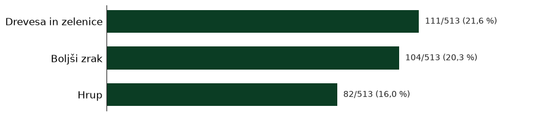


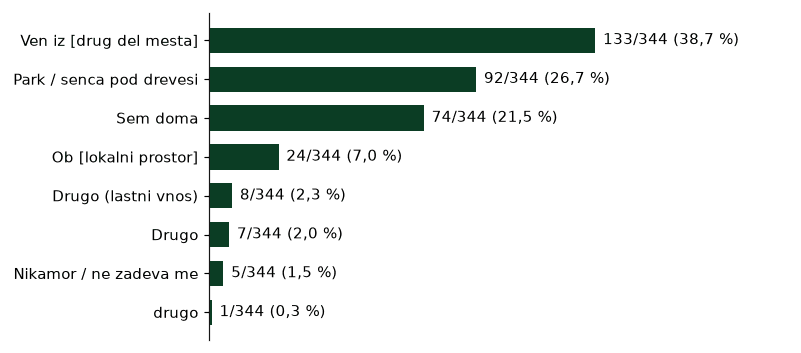
Komentarji
»Večerni hrup«
»Doma na dvoriscu«
»Hrup iz [ena od ulic v naselju]«
»Bolj urejene parke, ki niso umazani in zanemarjeni.«
»lahko bi ga bilo še več.«
»Več dreves.«
»Da bi iz zelenic naredili travnike, vsaj ponekod, kakšno veselje in lepota bi to bila!«
»Slab zrak zaradi izpušnih plinov.«
»Posekali so večja drevesa.«
»Hrupnost prometa. Vedno le manj sence. Prenasičenost naselja.«
»Hrup! Predvsem hrup iz zelezniske postaje.«
»nadomescanje dreves po tem, ko kaksnega pozagajo«
»ponovna nasaditev zelenega dela rondoja z lepsim cvetjem in grmicevjem (kot je bilo to pred preureditvijo)«
»Preveč se sliši ropotanje vlakovnih kompozicij. Naj dajo protihrupno ograjo, da se zmanjša hrup.«
»Slabo vzdrževanje zelenic(košnja) in dreves(obrezovanje posušenih)«
»Zato bi bilo super, če bi imeli enotno storitev košnje, obrezovanja živih meja in pospravljanja listja v naselju.«
»K [lokalni prostor], sicer pa doma pod klimo.«
»Prilascanje zelenic za zasebne vrtove,«
»zmanjšanje hrupa iz [ena od ulic v naselju],na prehodih so nekakšne debele črte,katere zelo pokajo,ko gredo čez avtomobili,to je noroo«
»To je prometno območje s hrupom s cest, tega ni mogoče spremeniti.«
»Problem je tudi zrak. Ob [ena od ulic v naselju] in dugih cestah je zrak obupen.«
»tudi na cesti mi ni všeč, ker so zdaj te "trečnice" in je zelo hrupno.«
»Se vec zelenih povrsin«
»To da se drevesa podira ker se sušijo, narediš pa ji da se nebi in nadomesti se jih stihijako.«
»V naselju pod drevesa, ali v klimatizirano stanlvanje«
»bivsa drevesa na [ena od ulic v naselju] :)«
»poleg tega pa sredi noči (okrog 1 do 2 zjutraj) nadebudneži pokrepljeni s opojnimi substancami glasno prepavajo in se pogovarjajo tako kot da se brez telefona pogovarjajo iz savca v [lokalni prostor] :D nekateri pa bi morda želeli ujeti nekaj ur prepotrebnega počitka. Saj jih poiskušam razumeti ampak ali oni poskušajo razumeti nas?????«
»Bolj varno, manj asfalta vec zelenice,«
»Pogrešam še več zasejenih dreves in drugega rastja, tudi užitnega, na že obstoječih zelenih površinah; to sploh ni nujno strošek, ker se mnoga drevesa zasadijo tudi sama.«
»v knjižnico«
»Lahko bi biu se kaksn manjsi park.«
»urejenost , skrb za okolje,«
»hrup [ena od ulic v naselju](moznost radarja)«
»zasadili sadno drevje«
»hrupa ki ga ustvarjajo in slabega zraka.«
»Drevesa niso obrezana in negovana že desetletja.«
»prenova [ena od ulic v naselju] in športnega parka je močno zmanjšala količino zelenja«
»Glasen hrup- sosedje«
»Hrup iz [ena od ulic v naselju] je obupen in presega ves čas dovoljeno mejo hrupa! Smrad od vozil ob cestnoh konjicah, ki so sedaj že stalnica.«
»in obrezuje drevja, ki je ponekod že nevarno zatadi svoje višine.«
»Se naprej negovali in sadili drvesa in prenehali z izgradnjo stolpnic.«
»slab zrak, jutranje ropotanje električnih “metel”,«
»Želela bi si večjo urejenost okolice, parkov«
»in prevelik hrup zvecer«
»Zasaditi nova drevesa, tam, kjer so bila drevesa odstranjena zaradi bolezni ali vetra.«
»Aktivacija zelenih površin, kjer se trenutno sprehajajo le kužki, s koticki za posedanje, kolektivna skrb za stara drevesa (veliko dreves v zadnjih vročinskih valovih je podleglo, predvsem tudi zaradi slabega vzdrževanja v preketlih letih; pristopiti tudi k MOL za pomoč, lahko samo strokovno, pri rednem vzdrževanju - ideja za aktivacijo stanovalcev s prikazi, kako bi naselje izgledalo brez vseh visokorastlih dreves),«
»Hišniki, ko pihajo z leaf blowerji, provročajo hrup ki odmeva čez bloke definitivno preglasno«
Dom skupnosti (Belokranjska 6)
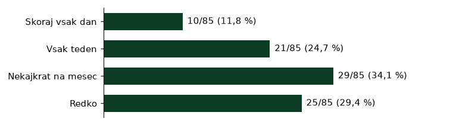

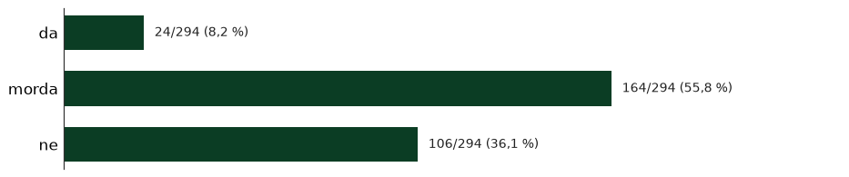
Komentarji
»Prostor za druženje stanovalcev, med generacijami«
»Prostorov za druženje je malo ali jih, razen lokalov, sploh ni.«
»Skupnostni prostori z aktivnostmi«
»Da bi imeli več brezplačnih vodenih vadb v tej dvorani zraven doma skupnosti. Da bi bila [lokalni prostor] večja in imela dovolj velik prostor za raznorazne delavnice.«
»Prostore za skupnost in srečevanje«
»Kulturni dom/ središče«
»In težavo vidim, da nimamo svojega doma krajevne skupnosti, kjer bi se družili, ta bi imeli občutek da smo Community.«
»Prostori za druzenje«
»Še kakšen prostor za kulturne vsebine.«
»prostore za druženje«
Igrišča, mladi in šolska pot


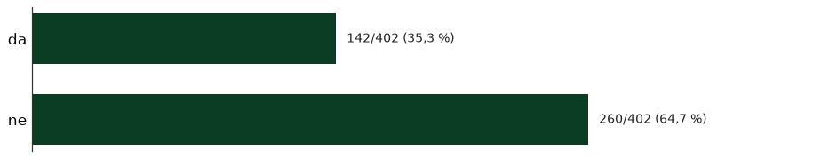
Komentarji
»Igrisce zrihtat zraven [ena od ulic v naselju] k je igrisce za kosarko in nogomet dotrajani«
»Električni skiroji«
»Lahko bi obnovili košrkarska/nogometna asfaltirana igrišča, ker so že precej uničena.«
»Tudi marsikatera igrišča bi potrebovala prenovo.«
»Prehodi čez [ena od ulic v naselju] - avti drvijo, ne ustavljajo niti otrokom. [ena od ulic v naselju] - zelo nevarni za otroke«
»varna pot do šole,«
»Ozka pot, dvosmerni promet, ni poti za kolesarje, pri šoli ni parkiranja«
»ter na otroških igriščih.«
»Igrisca,«
»Izboljšal bi igrišče na [ena od ulic v naselju] predvsem igrišče za odbojko ki so ga vandali uničili (postaviti bi bilo treba močnejše štange kot so bile dolgo pred leti)«
»Med poletjem bi lahko biu kksn pitnik z vodo na [lokalni prostor] igriscu«
»Še boljše opremljen fitnes na prostem.«
»Igrišče na [ena od ulic v naselju] ni bilo prenovljeno že xy let... potrebna je prenova asfalta, zamenjava gola pri hribu (tista polomljena kovinska "palica" je smrtno nevarna, predvsem pozimi, ko se otroci sankajo) in še kaj bi se našlo.«
»Da otroc ne bi uničevali ping pong mize.«
»pot od [ena od ulic v naselju] mimo [lokalni prostor] proti lokalna ustanova«
»[ena od ulic v naselju]-[ena od ulic v naselju]: v resnici mininalno pločnikov, veliko neoznačenih prehodov čez cesto, hoja med avtomobili«
»bolj urejene steze za otroke.«
»Čeprav, so moji otroci že zrasli, se mi zdi nesprejemjivo, da je šolsko igrišče zaprto v popoldanskem času. Če jih skrbi vandalizem, bi lahko organizirali zaklepanje po 20 uri. Pa prav šolah povdarjajo, kako koristno je za otroke druženje + igra in ne posedanje doma s telefonom v roki.«
»Ni pasjega igrišča, otroško igrišče med [ena od ulic v naselju] in [ena od ulic v naselju] se uporablja kot zbiranje najstnikov in pijancev, ki uničujejo igrala, klopce in puščajo povsod smeti, zato ni primerno za otroke.«
»Pločniki, zasedeni z avtomobili«
»Šolsko igrišče zaprto z ograjo....šolc je vedno bil središče dogajanja v Savcu pa bazenćek seveda...«
»Igrišče«
»Nujno urediti pot do vrtca [lokalni prostor] in do lokalna ustanova-da bo dejansko varna-spremeniti prometni režim: [ena od ulic v naselju] in [ena od ulic v naselju] spremeniti v enosmerni ulici (vhod z ene ulice, izhod z druge), na [ena od ulic v naselju] narisati črto, ki označuje pot za pešce ali namestiti hitrostne ovire-ležeče policaje), narisati prehode za pešce na [ena od ulic v naselju] pri [lokalni prostor], enako na [ena od ulic v naselju], kjer se seka z Ulico [ena od ulic v naselju].«
»Ni prehodov za pešce, ni označene peš poti, ni hitrostnih ovir, ni dovolj širokega pločnika«
»Moti me, da lokalna ustanova zaklepa solsko igrisce. Ni prav, da se popoldan po 17ih ne morejo otroci tam igrati«
»[ena od ulic v naselju] nima pločnika, v kolikor se uredi pločnik pa ne bo parkingov.«
»Zaprto šolsko igrišče v popoldanskih urah.«
»Ni plocnikov, ni dovolj parkirnih mest pred vrtcem«
»Izhod iz bloka, zjutaj je noro ker ke pri vrcu in zelo nepregledno zaradi parkiranih vozil na zelenici plicniku«
»Tukaj veliko otroci pesce do Vrtec in sola. Lepo prosim«
»Na [ena od ulic v naselju] ni pločnika, zelo ozka zelenica ob cesti ni pokošena in je polna pasjih iztrebkov, nimaš kje hodit, razen po cesti«
»Od [ena od ulic v naselju] hriba do šole ni nobenega prehoda za pešce(vsaj na poti katero uporablja večina otrok)«
»Prehod na [ena od ulic v naselju], prehod pri [lokalni prostor]«
»pot po [ena od ulic v naselju], mimo [lokacija odstranjena], saj ni tam ne pločnika, pot čez igrišče pa je ravnateljica po prenovi prijazno zaprla s tremi nivoji ograj. Tudi sicer dostop do šole iz drugih smeri ni ravno nekaj briljantnega, z luknjami v asfaltu (ki so super ob deževnih dneh ...) in pločniki, polni parkiranih avtomobilov, tudi tistih staršev, ki svoje sončke do vhoda šole ("samo za minuto") pripeljejo z avtomobilom.«
»ozek pločnik na [ena od ulic v naselju], zaparkiran pločnik na [ena od ulic v naselju]«
»Po [ena od ulic v naselju], posebej nasuprot vrtca. Avtomobili so parkirani tako da so na pol na cesti, staze za pešce na tej strani ni, enako kot prehoda za pešce nikjer ni.«
»Hodniki za pešce, zaparkirane površine za pešce, ureditev drop-off, ni kolesarskih površin«
»urediti da se otroci lahki igrajo na šolskem igrišču, ki prvič po obnovi šole sameva in je sam sebi namen.«
»prehod pri [lokalni prostor]«
»igrišče za otroke«
»ureditev igrišč, ki so v bližini blokov«
»[ena od ulic v naselju] (hitrost avtomobilov, brez pločnika) ter [ena od ulic v naselju], kjer ob gneči nastane kaos.«
»Hoja po cesti ([ena od ulic v naselju])«
»Prenoviti bi morali igrišče ob [ena od ulic v naselju]«
»Zaklenjeno šolsko igrišče, prenovljeno z nasim denarjem, nedostopno nasim otrokom.«
»[ena od ulic v naselju], ki nima prehoda in pločnika do vrtca«
»prehod pri [lokalni prostor] cez cesto, ter po [ena od ulic v naselju] kjer divjajo in je ozko, ter po [ena od ulic v naselju] kjer divjajo«
»Ni oznak na cesti, zmanjsana hitrost 30km/h manjkajo zebre,«
»zanemarjena igrisca«
»Parkirana vozila na vseh pločnikih«
»Preckanje ceste - vcasih avti hitro vozijo, ceprav so lezeci policaji«
»Pred vrtcem (pomanjkanje parkinga). Mi gremo sicer peš…«
»Manjkajo tudi prostori za notranje športne dejavnosti. Za pozimi ni nič pametnega (brez problema tudi plačljivo seveda).«
»manjkajo prehodi za pešce v okolici šole,«
»Bazen«
»Celotna [ena od ulic v naselju] (zaraščene žive meje, brez prehoda za pešce, avtomobili ki so parkirani na pločniku in tik ob vhodu v stavbo)«
»Problem so tudi nekatera manjša otroška igrišča, ki propadajo, saj so zapuščena, igrala dotrajana, imajo veliko število smeti, tam se velikokrat zbirajo tudi brezdelneži ipd. Nekatera igrišča so bila sicer že prenovljena s strani MOL-a, k temu bi morali strmeti še naprej ter to doseči tudi za vse zelene površine znotraj naselja.«
»Otroska igrisca, bazen v soli spraviti v pogon-smo redka sola, da ga ima in to obnovljenega,«
»Da bi bila igrišča bolj urejena/prenovljena.«
»Mladinski center«
»varnejsi dostop do sole za otroke, urejena igrisca«
»Neurejen rezim med vrtcem in solo - kaos, brez prehoda med vrtcem in solo«
»[lokalni prostor] [ena od ulic v naselju],[ena od ulic v naselju]«
»dotrajan asfalt na [ena od ulic v naselju] igrišču..ribež za kolena otrok«
»Ni ploćnika ker so avtomobili parkirani nanj«
»prostor in dejavnosti za mladostnike«
»[ena od ulic v naselju] nima plocnika«
»Nekatera igrišča bi potrebovala obnovo, sploh košarka in odbojka za [lokalni prostor] na [ena od ulic v naselju].«
»[ena od ulic v naselju] in [ena od ulic v naselju] s strani [ena od ulic v naselju], preveč prometa ob prihajanju in odhajanju iz vrtca.«
»dostopna stanovanja za mlade.«
»kakšen prostor za mlade bi bil potreben«
»Ni pločnikov do [lokalni prostor] na [ena od ulic v naselju]«
»Ni prehodov za pesce«
»[ena od ulic v naselju] ker je ozka«
»Ozek plocnik, prometna cesta, hitri vozniki«
»prehod pri malem [lokalni prostor] do sole«
»otroško igrišče ni ograjeno«
»odprli solsko igrisce za vse, postavili kak pitnik na igrisce,«
»Slabost je tudi to, da je novo šolsko igrišče zaklenjeno in ne omogoča vsem prebivalcen uporabe!«
»šola ima pa res slab renome, kar je velika škoda«
»Veliko je potrebno hoditi kar po cesti«
»Pot od [ena od ulic v naselju] po [ena od ulic v naselju], kjer so na pločniku konstantno avti«
»Prav tako bi se ze moralo odpreti solsko igrisce za vse. Hisnik zivi v tej stavbi in bi lahko vsak dan zaklenil (npr. Odprto je do 21h ure). Namesto, da smo veseli, da se otroci zadrzujejo na igriscu in igrajo nogomet, kosarko jim mi to prepovedujemo. To ni prav.«
»Ljudje vozijo prehitro!«
»Je pa problem ker na [ena od ulic v naselju] igriscu ni urejeno igrisce za otroke za nogomet za kosarku ni kosev,ni golov lukne na betonu ne varno je na sploh zza varstvo otrok.Bilo bi lepo da se uredi za otroke da se imajomkje igrat lepo«
»Ni igrisc da otrok se lepo in varno igrajo,tudi igral za otroke ni.«
»Dostopnost do šolskega igrišča ni omogočena vsem stanovalcem. Na [lokalni prostor] igrišču in na drugih igriščih ni pitnikov za vodo in klopc za počitek ali navijače.«
»Igrišče za odbojko na [ena od ulic v naselju] je v razsulu!«
»- Igrišče na [ena od ulic v naselju]!!! Ureditev je NUJNA! Predlogom [ime odstranjeno] iz [ena od ulic v naselju] (FB objava) bi dodala le še mizo ali dve za namizni tenis.«
»dostop do igrisc ,«
»Da bi dobili odbojkarsko mrežo pogrešam pa da ni več na igrišču ene velike hiške«
»[ena od ulic v naselju], veliko je prehitrih avtomobilov.«
»Odprto šolsko igrišče Prenova igrišča [ena od ulic v naselju]«
»Zaradi pomanjkanja parkirnih prostorov. So avtomobili na pločnikih. Otroci morajo hoditi po cesti na nekaterih predelih«
»ureditev varne poti za otroke do šole, predvsem prečkanja [ena od ulic v naselju],«
»Več možnosti za notranje športne dejavnosti, npr. Bazen.«
»bazen, savna,«
Dvigala in dostopnost

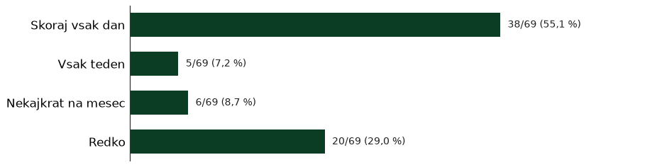
Komentarji
»Na [ena od ulic v naselju] nimamo lifta zaradi ene osebe ki kontrira. A druga stopnišca v bloku so se zlahka dogovorili in ga uspeli pridobiti? Kaj storiti?«
»ter spodbuditi iniciativo za izgradnjo dvigal v blokih, ker lastno dogovarjanje je nemogoče, saj imajo ljudje v pritličju ter najemodajalci velikokrat nasprotujoča se mnenja glede smiselnosti vgradnje dvigal v bloke. (Izgovori so visoki stroški, hrup…)«
»Plocniki nimajo klancin in niso primerni za vozicke, kaj sele za invalidske vozicke.«
»Bloki brez dvigal.«
»stopnice za na [ena od ulic v naselju] hrib,«
»dostop za invalide in starejše«
»V vseh blokih dvigala.«
Zdravstvo


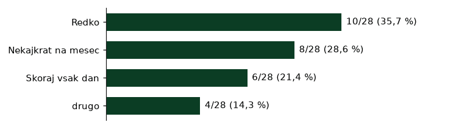
Komentarji
»Zdravstveni dom«
»v naselju bo potrebna vzpostavitev psihološke svetovalnice za ljudi z duševnimi težavami«
»psiholog, psihoterapevt ki bi bil dostopen celotnemu naselju«
»Zraven je zasebna ambulanta, ne vem kako dostopna je na stroške zavarovanja«
»Brez zdravnika.«
»ginekolog«
»Zdravnik v [lokalni prostor], samo ne prideš zraven«
»trenutno imam na razpolago dokaj ugoden dostop do vsega, kar potrebujem, a verjamem, da če bi bil v tretjem življenjskem obdobju, bi pogrešal javno primarno zdravstveno dejavnost.«
»boljša bus povezava (direktna) do [lokalni prostor]«
»večinoma super«
Upravniki in zbori


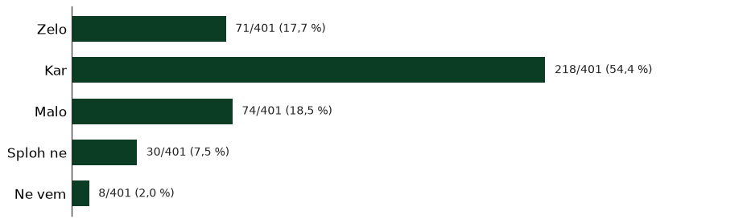
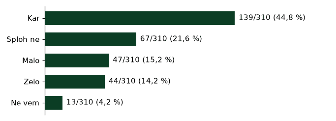
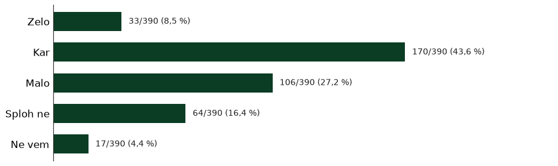
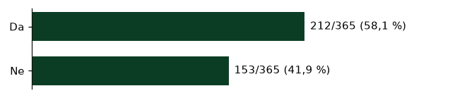
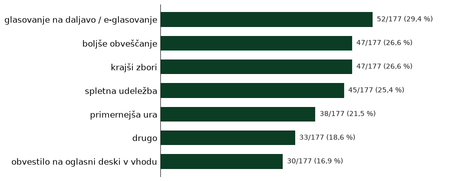
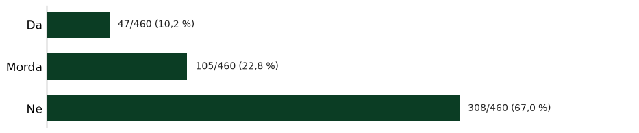
Komentarji
»veliko blokov se ni pristopilo k obnovi fasad,«
»Skupno angažiranje za subvencija za energetsko sanacijo [lokalni prostor], kjer fasada pušča in nam ob nalivih dobesedno teče v stanovanja, stolpnice pa so del (kulturne?) dediščine«
»-fasade na blokih in notranjosti blokov so zastarele in potrebne obnove. V več blokih oz. vhodih po tleh raste mah, ponekod so vhodna vrata razmajana...(To sicer "leti" na upravnike stanovanjskih blokov).«
»Kot dodatno pomanjkljivost bi izpostavila tudi ureditev balkonov v najvišjih stanovanjih. Ne vem, ali je enaka situacija tudi pri drugih blokih, vendar pri našem najvišja stanovanja nimajo nadstreška nad balkonom. Menim, da bi bilo smiselno razmisliti o možnosti njegove namestitve, saj bi ta stanovalcem zagotavljal boljšo zaščito pred vremenskimi vplivi. Poleg tega bi bilo po mojem mnenju zelo koristno, če bi se za odklepanje vhodnih vrat bloka uvedel sistem čipov oziroma elektronskih ključev, namesto da se za vstop uporablja izključno klasični ključ. Slaba je tudi izolacija bloka, za kar se že nekaj časa varčuje.«
»Blokom za stavbo [lokalni prostor] in [lokalni prostor] naj zamenjajo zvonce in naj obnovijo stene«
Obveščenost o sejah ČS in OPPN
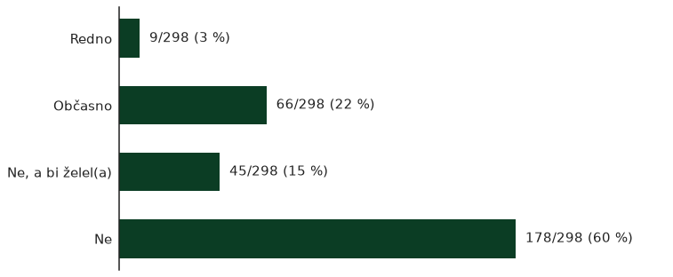
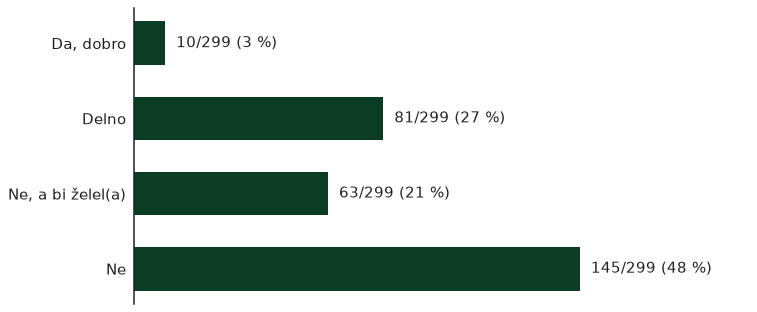
Druženje, dogodki in pomoč
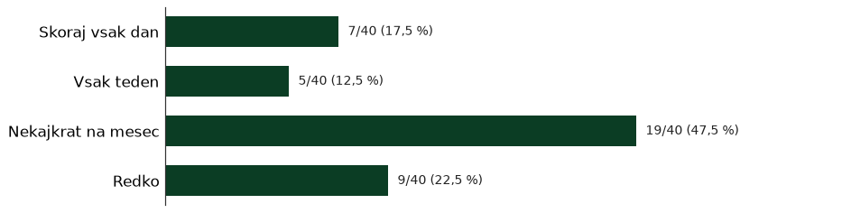
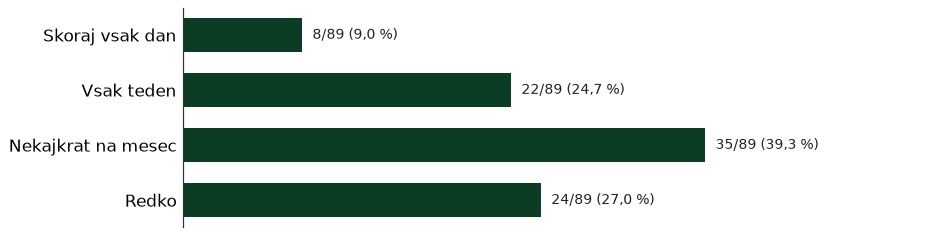
Komentarji
»Pogrešam, da bi imeli enkrat na mesec kak dan soseda, kjer bi imeli en mesec soseski bolšji sejem, drugi kino med bloki, tretji kakšna predavanja ali pa delavnice pod krošnjami, vsakič pa tudi čistilno akcijo (omejeno npr. na 1h vsak, nič velikega, ampak da bi nam prišlo v kri).«
»Kulturo prebivalcev«
»Neka skupna oglasna deska za lokalne storitve (šivilje, prodaja, dogodki...)«
»savc je sicer spalno naselje, vendar je za kulturo slabo poskrbljeno.«
»večjo kulturo stanovalcev«
»Morali bi organizirati vsaj 1x letno velik dogodek za [ena od ulic v naselju] in o tem prej narediti reklamo, obvestiti vse prebivalce. Naj to postane tradicija, ki se nekako prime, s koledarjem dogodkov.«
»Žal nismo dovolj proaktivni, da bi delovali kot skupnost. Manjka dogodkov, ki bi nas sosede povezovali. Manjka tudi posluha odločevalcev, da bi skupaj urejali sosesko.«
»Decembra več okrasitve.«
»Podpiram druženje.«
»Pogrešam blok partyje kot so bili včasih :)«
Vprašanja za starejše (65+)
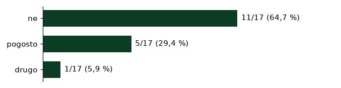
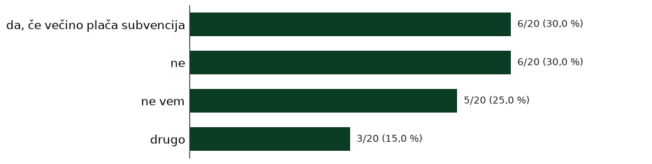
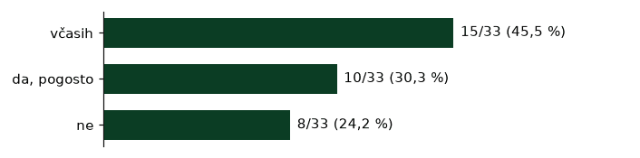
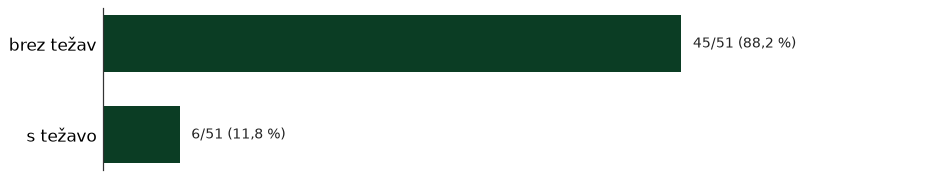
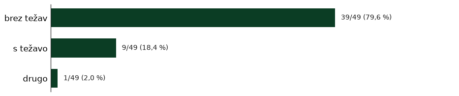
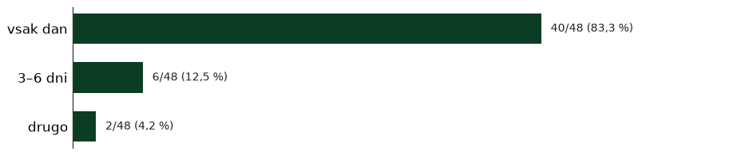
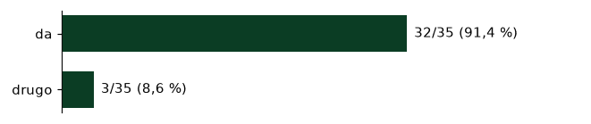
Klop za počitek pogosto ali včasih pogreša 25/33 (76 %).
Komentarji
»Za starejše pa urediti možnost sprehodov ( prevelik promet, ni klopi za sedenje..)«
»Razgibovalne naprave za starejše v športnem parku naselje nekaj kot imajo v [ena od ulic v naselju] ob [ena od ulic v naselju]. [povezava odstranjena]«
»nastanitvena, dom skupnosti za starejše, kot [lokalni prostor] za starejše, prostor za tiste kamor nikamor ne grejo, na kosilo in tako naprej, tisti ko nič ne, nekateri težko vstajajo zjutraj«
Vprašanja za mlade (15–24)
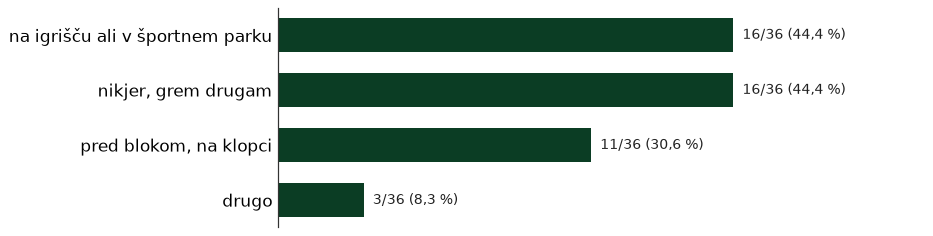
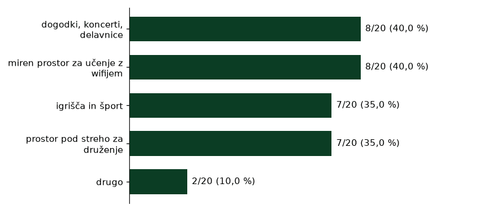
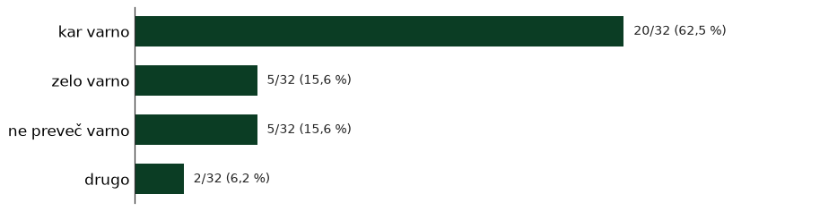
Odgovori o starosti in bivanju
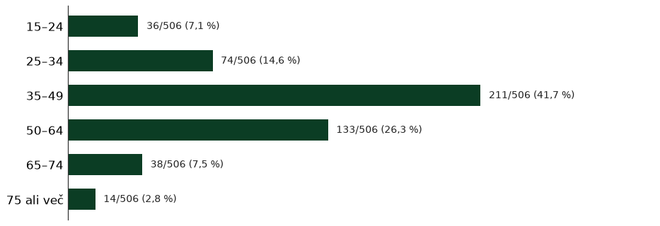
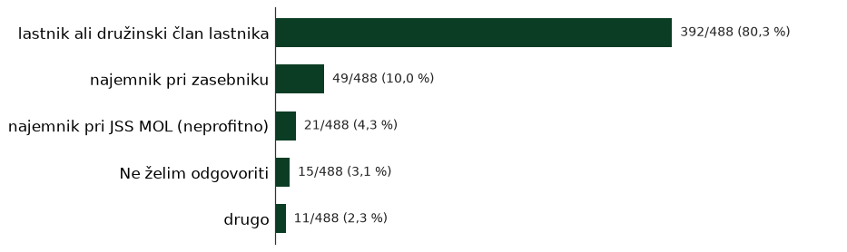
Drugi komentarji
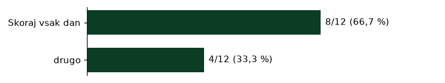
Komentarji
»Mir«
»V zadnjih desetih letih je šlo vse samo navzdol, če bi lahko, bi se odselila.«
»Predvsem okrog bivšega bara [lokalni prostor] in okrog tega osrednjega parkirišča«
»Vse to so problemi nasega naselja.«
»Uporabnost zaklonišča,«
»V tem b«
»2. V okolici [ena od ulic v naselju] športnega parka so industrijski/poslovni/prevozniški obrati - zakaj ne bi tega spremenili v novo blokovsko naselje in preselili industrijske obrate drugam (predvsem, kar je v lasti države in Mol).«
»Več časa zase«
»In nepobranih davkov. Davki so država, ki poskrbi za socialo, asfalt, dolgotrajno oskrbo itd.«
»Preveč neregistriranih savčanov.«
»Kar sem že naštel«
»upoštevajte, da v naseljo živimo tudi v hišah (npr. vrstne hiše ne [ena od ulic v naselju]) in ne samo stanovalci v blokih.«
»[lokalni prostor] igrisce [ena od ulic v naselju] hrip«
»[lokalni prostor]«
»Pri [lokalni prostor], na uni mali potki in pred [lokalni prostor]«